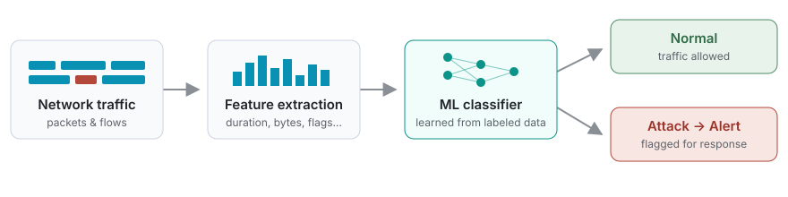

Journal article
AI-Powered Network Intrusion Detection System
Journal of Networking and Communication Systems (JNACS), Vol. 9, No. 2

Problem
Signature-based intrusion detection only catches attacks it has seen before. As network traffic grows and attacks change, rule lists fall behind.
Approach
We used machine learning to learn the difference between normal and malicious traffic from flow-level features, so the system can flag suspicious activity, including patterns that no fixed rule describes.
My role
As co-author, I worked on the study and on writing the paper, which was peer-reviewed and published in JNACS.